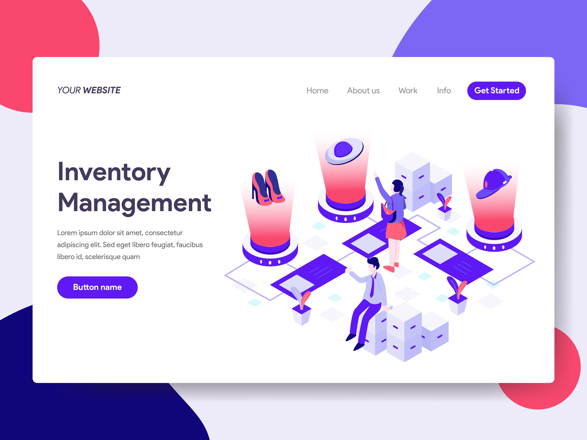
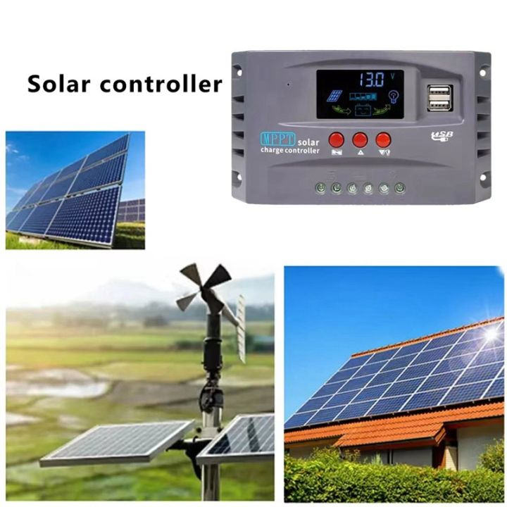

Projects & Achievements
Showcase of Work & Milestones
Projects
Project Title 1 : Web-Based Inventory Management System
A full-stack application that streamlines inventory tracking for small businesses, providing real-time updates, search filters, and reporting features. This system optimizes resource allocation and enhances inventory accuracy.
Technologies Used: HTML, CSS, JavaScript, Node.js, Express, MongoDB
Project Title 2 : Smart Solar Energy Controller
Developed a microcontroller-based system to monitor and control solar energy flow, storing excess power in a battery for later use. This project aimed to enhance renewable energy efficiency in small setups.
Technologies Used: PIC16F628A Microcontroller, C Programming, RS-485 Communication, Solar Charge Controller, Battery Management System
Project Title 3 : Intelligent Zero Trust Framework for Edge Computing
Designed an AI-driven security framework that applies zero-trust principles to edge devices, leveraging machine learning to monitor behavior and detect anomalies in real-time.

Technologies Used: Python, TensorFlow, Scikit-Learn, Edge Computing Platforms, Network Security Protocols (e.g., SSL/TLS), AI Model Deployment
Achievements
- Academic Excellence Award (2024) - Recognized for maintaining a high GPA in electronics and computer science courses, demonstrating strong understanding and mastery of key concepts in the field.
- Professional Certifications - Earned certifications in web development (such as the freeCodeCamp Responsive Web Design Certification and Coursera Full Stack Web Development Specialization) and machine learning (including Coursera's Machine Learning by Andrew Ng and edX's Professional Certificate in Data Science), validating proficiency in creating dynamic web applications and understanding AI algorithms and their applications.
- Research Publication - Contributed to a published research paper on a relevant topic in AI or electronics, showcasing the ability to conduct thorough research and present findings in a formal academic setting.